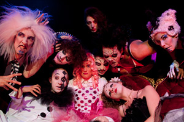

past performance | ||
|  |
The Tragedy of Maria Macabre Conceived, Designed & Choreographed by Rachel Klein | |
synopsis:The Tragedy of Maria Macabre is a theatrical dance piece inspired by 19th century European Circus imagery, silent horror films, and el Dia de los Muertos. The story begins at the end of the life of our twisted heroine, Miss Macabre. Upon dying, Maria Macabre is not granted eternal slumber, but instead a whirling, kaleidoscopic carnival of horrors: a morbid funhouse where humanity is stripped away and a permanent place in the gruesome chorus line is all but assured. Arriving in the land of the dead, Maria Macabre is greeted by the King and the Queen of the Dead, and many other ghoulish Hades-Dwellers including a maniacal Ringmistress, a Beauty Queen burnt to a crisp, a menacing French Clown, and three skeletal Mariachis. RKP Theater Ensemble’s haunting dance piece The Tragedy of Maria Macabre will feature Preston Burger (lead dancer The Forms “Fire To The Ground” music video), Danielle Marie Fusco (Joyce Soho; Martha Graham Repertory), Abigail Hawk (Baker in “Blue Bloods” on CBS), Danny Mendoza, Megan O’Connor, Ethan O’Hara, Scooter Pie (Co-host, Shaken and Stirred Burlesque), Michael Porsche, Brian Rubiano, Eric Schmalenberger (House of Yes; The Voluptuous Horror of Karen Black), and Elizabeth Stewart (The Hunter and the Swan Discuss Their Meeting at Sundance). The production is conceived, designed and choreographed by New York Innovative Theatre Award nominated directed and choreographer Rachel Klein (Circus of Circus at The House of Yes). The creative team will include Costume Design by Rachel Klein and Kae Burke (Winner of the 2011 New York Innovative Theatre Award for Innovative Design), Sound Design by Sean Gill, Lighting Design by Ben Kato, Calligraphy Design by Pak Kei Mak, Feather Design by Ashley Morgan Monroe, Makeup Design by Anita Rundles and Costume Construction by Make Fun Studios. The production will be Stage Managed by Marina Steinberg. | ||
upcoming performances |
|||
 |
|||
| EVQ Film Festival 2018 August 20-25 |
|||
performance archives |
|||
| 2018 | 2017 | 2016 | 2015 |
| 2014 | 2013 | 2012 | 2011 |
| 2010 | 2009 | 2008 | 2007 |